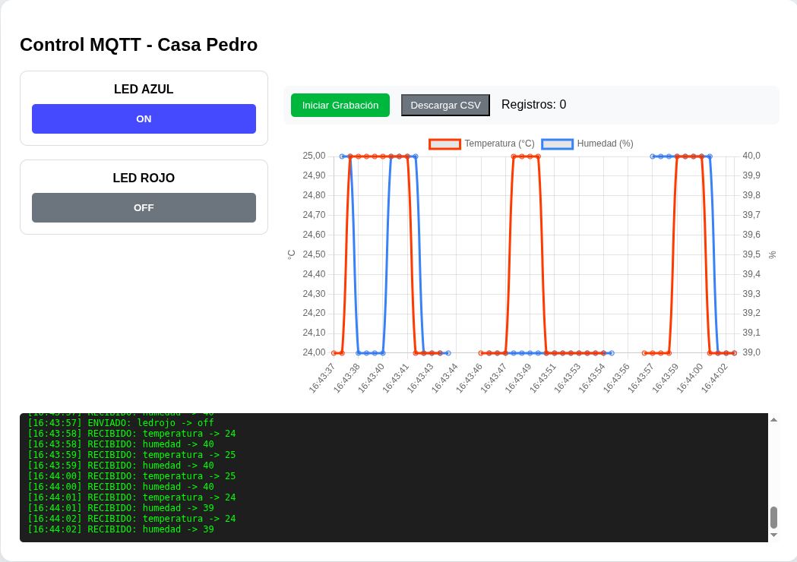

Los paneles o dashboards son interfaces dónde realizar publicaciones o subscricciones de forma gráfica y sencilla en el servidor.
Pará dispositivos móviles
Las dos aplicaciones que hemos encontrado de cierta calidad son estas, y no pueden configurar usuario y contraseña, por tanto no conectarán con un servidor mosquitto con autenticación.
Paneles webs
También podemos realizar páginas webs en forma de paneles o dashborads para mandar topics y valores o para recibir topics y valores de la placa. En concreto esta ha sido realizada a través de Gemini usando el siguiente prompt, y algunas mejoras posteriores:
Prompt para broker Pedro Ruiz.
Quiero hacer una página web que controle una placa a través de mqtt con un servidor mosquitto. La IP pública del servidor es casapedro.synology.me, con usuario: anonimo y contraseña: anonimo. El servidor responde a través del puerto ws 9001. En la web debe aparecer dos botones tipo on off para controlar dos leds rojo y azul. Cuando el boton azul está en posición on manda un tema o topic ledazul con valor on, cuando el boton azul está en posición off manda un tema o topic ledazul con valor off. Cuando el boton rojo está en posición on manda un tema o topic ledrojo con valor on, cuando el boton rojo está en posición off manda un tema o topic ledrojo con valor off. Además deben representarse en tiempo real las gráficas de los sensores a la que la web está suscrito, en un sólo interfaz de gráficas. Los topics de las gráficas son: temperatura (topic temperatura) y humedad (topic humedad) . Además debe tener un botón para guardado de datos en formato csv, y alguna animación que indique que está grabando datos. Debe aparecer también una consola dónde aparezcan los topics suscritos y sus valores, así como los topics enviados y sus valores.
Promp para broker hivemq
Quiero hacer una página web que controle una placa a través de mqtt con un servidor mosquitto. La dirección del servidor es broker.hivemq.com, y no presenta usuario. El servidor responde a través del puerto ws 8000. En la web debe aparecer dos botones tipo on off para controlar dos leds rojo y azul. Cuando el boton azul está en posición on manda un tema o topic ledazul con valor on, cuando el boton azul está en posición off manda un tema o topic ledazul con valor off. Cuando el boton rojo está en posición on manda un tema o topic ledrojo con valor on, cuando el boton rojo está en posición off manda un tema o topic ledrojo con valor off. Además deben representarse en tiempo real las gráficas de los sensores a la que la web está suscrito, en un sólo interfaz de gráficas. Los topics de las gráficas son: temperatura (topic temperatura) y humedad (topic humedad) . Además debe tener un botón para guardado de datos en formato csv, y alguna animación que indique que está grabando datos. Debe aparecer también una consola dónde aparezcan los topics suscritos y sus valores, así como los topics enviados y sus valores.

El panel o dashboard en html te lo puedes descargar aquí.